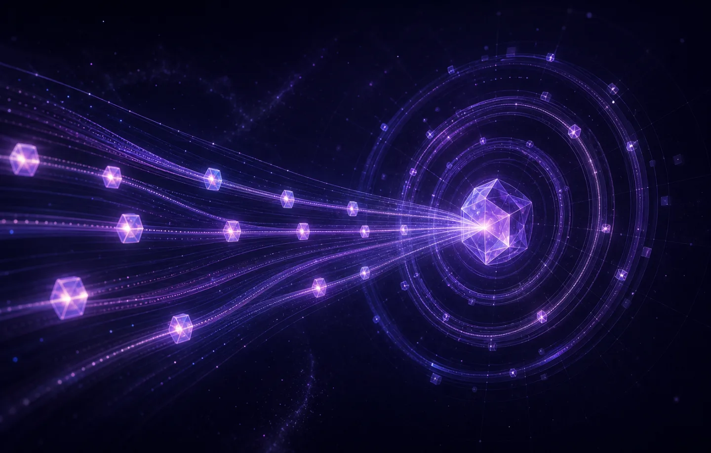

01 · 省钱
缓存自动命中 prefix cache
为 DeepSeek 协议级适配。消息历史只追加、绝不原地改，连写盘都做成前缀感知——服务端缓存稳稳命中，默认关掉激进压缩。
96%+ 前缀缓存命中率
大多数工具优先适配 Claude，DeepSeek 只是"能用"。Nova 反过来——把省钱、安全、灵活刻进架构，假设模型会出错，让每一层都为恢复而设计。
/usage 查看明细
挑一个终端 AI 编程工具，开发者最在意的三件事。Nova 把它们做成了设计里的硬约束。

为 DeepSeek 协议级适配。消息历史只追加、绝不原地改，连写盘都做成前缀感知——服务端缓存稳稳命中，默认关掉激进压缩。
所有 bash 与子进程跑在内核沙箱里，文件写入被锁死在工作区内。零配置、零摩擦，不支持的平台静默降级绝不打断你。
放一个带 frontmatter 的 Markdown，它立刻变成运行时能力:子代理、斜杠命令、技能。不改源码、不重编译,提交到 Git 即团队共享。
统一的 hook 扩展点、严格单向的包依赖、全链路 schema 校验边界——核心循环不碰任何模型 SDK 与界面。
appendMessage 治理。压缩不截断历史,只追加一个 <compacted> 边界,归档完整保留。系统提示词全程冻结,缓存永不塌陷。max_tokens 是暂停而非崩溃,自动续写;每个 tool_use 都配对 tool_result;字段名写错也照跑。
explore / plan 只读、general 全能,双层强制权限。/goal 用独立校验子代理跑真实测试,输出 VERDICT: MET 才收工。
Nova 的扩展哲学只有一句话:带 frontmatter 的 .md 文件,立刻变成运行时能力。所有外部能力都走声明式、零代码的入口,并共享同一道权限门。
---
name: reviewer
description: 只读代码审查,输出 file:line 格式的问题
tools: [read, grep, glob, lsp]
readOnly: true
---
你是只读代码审查子代理。逐文件审查 diff,
按 file:line 格式报告问题,不要修改任何文件……/resume 交互式挑选历史会话,完整迁移 Agent 状态;/clear 开新会话而不丢旧的。
写前 SHA-256 内容寻址快照。回滚同时还原对话与文件,并自动检测外部改动冲突。
Agent 自建定时任务,支持 5m 间隔或 cron 表达式,/resume 时自动重新装载。
跨会话持久化的任务图,带 blockedBy 依赖边,多个任务可并发进行中。
nova plugin install 兼容 Claude Code 插件格式:命令、子代理、技能、Hook、MCP、LSP。
nova -p --format jsonl 在 CI 里跑完整 Agent 循环,复用同一套 hook 与工具栈。
许多能力,Nova 是开源阵营里唯一或最完整的一个。
| 能力 | Nova | Claude Code | Aider | Cline |
|---|---|---|---|---|
| LSP 代码智能 | ✓ 一等工具 | 仅 grep | 仅 grep | 外部 |
| Goal 自动纠错循环 | ✓ Agent 化校验 | — | — | — |
| 快照 + 回滚 | ✓ 历史 + 文件 | — | — | — |
| max_tokens 恢复 | ✓ 自动续写 | 硬报错 | 硬报错 | — |
| Append-only 前缀缓存 | ✓ 96%+ 命中 | 部分 | N/A | N/A |
| OS 级沙箱 | ✓ 开源 | 闭源 | — | — |
| 会话热切换 | ✓ 完整状态迁移 | 仅 --continue | — | — |
一个假设模型会出错、优雅恢复、绝不丢失你工作的开源 Agent 运行时。去试试,顺手点个 Star。